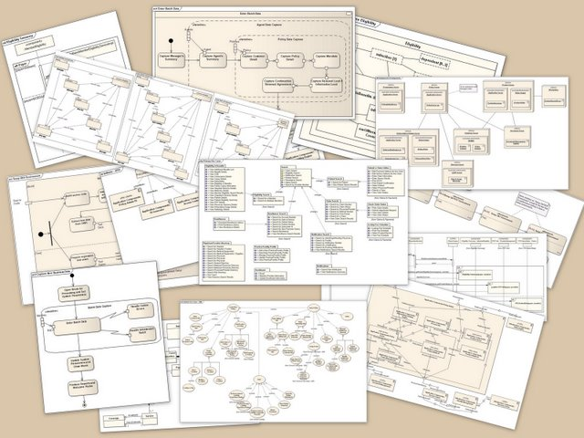
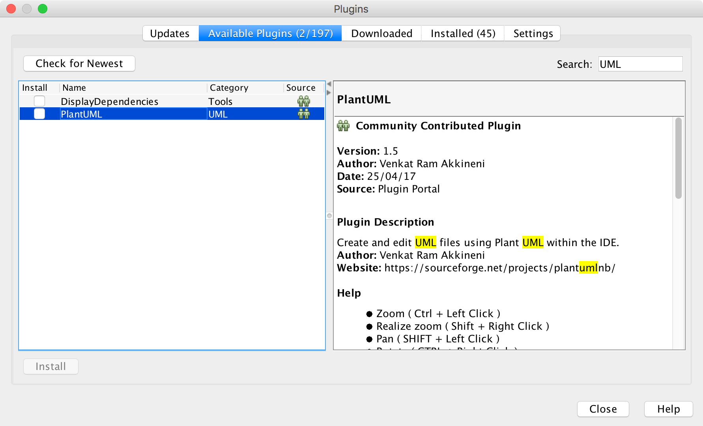
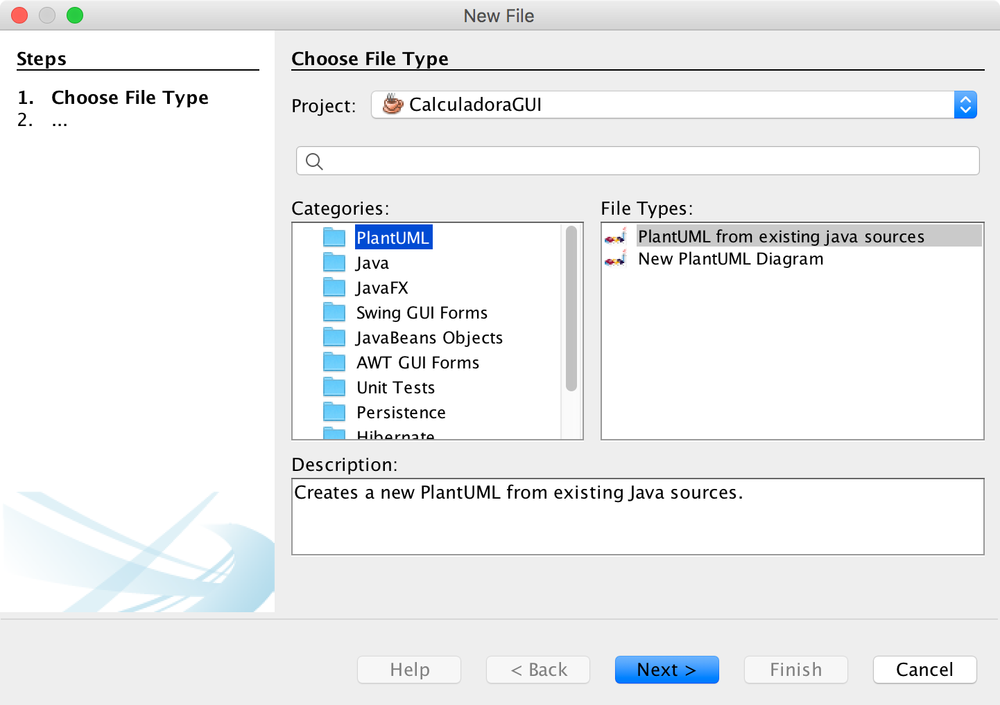
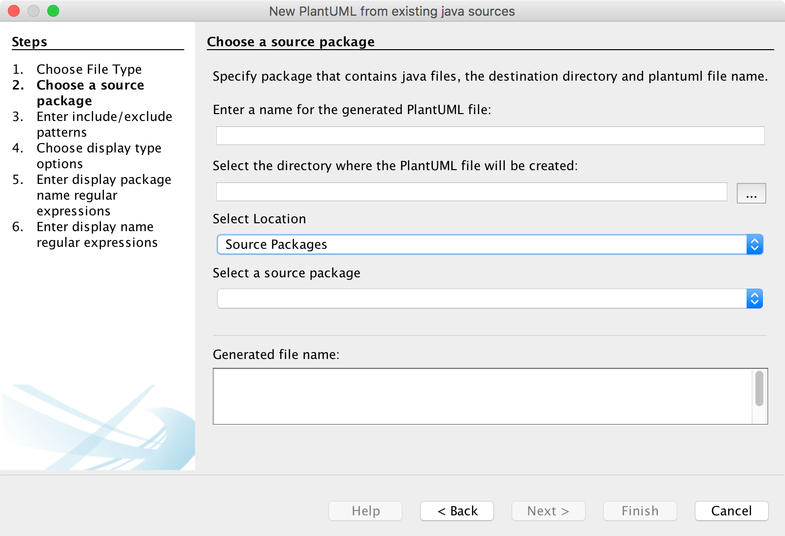
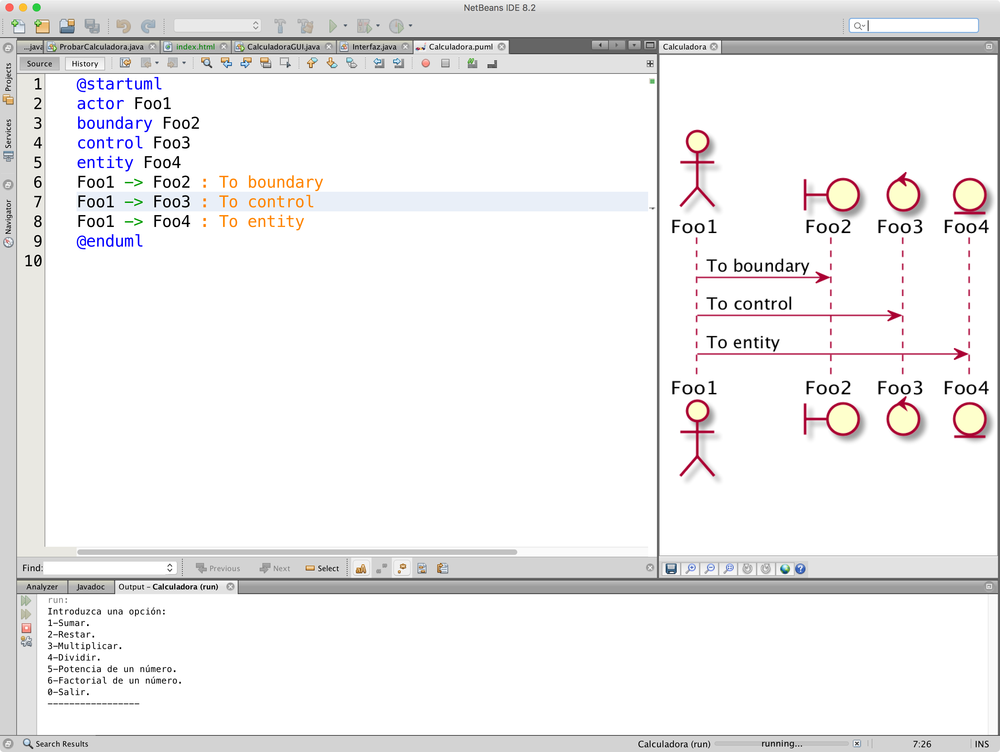

5.2.- Plugin UML para NetBeans.
UML es un lenguaje de modelado Unificado. Es un lenguaje gráfico para visualizar, especificar, construir y documentar un sistema software.

Podemos acceder a través de la opción Tools->Plugins al gestor de Plugins de Netbeans.

Buscamos los plugins relacionados con UML y llevamos a cabo su instalación. Una vez instalado, como si de un fichero nuevo se tratara podemos crear los distintos diagramas de UML. Accedemos a File->New File y seleccionamos la opción PlantUML.

Una vez seleccionemos PlantUML, nos aparecerá un asistente que nos ayudará en el proceso de creación del diagrama UML.

Una vez tenemos creado nuestro fichero .puml dentro del proyecto, podemos utilizando la sintaxis correspondiente, generar nuestros propios diagramas de UML.

Para que se genere el diagrama UML, habrá que compilar el proyecto sin errores.
El lector que esté interesado en conocer más información sobre planUML puede consultar la página oficial del proyecto.
Para saber más
UML es un lenguaje para modelar software. Recomendamos al lector interesado que busque información sobre dicho lenguaje. Para ello recomendamos algunas páginas web.
https://es.wikipedia.org/wiki/Lenguaje_unificado_de_modelado